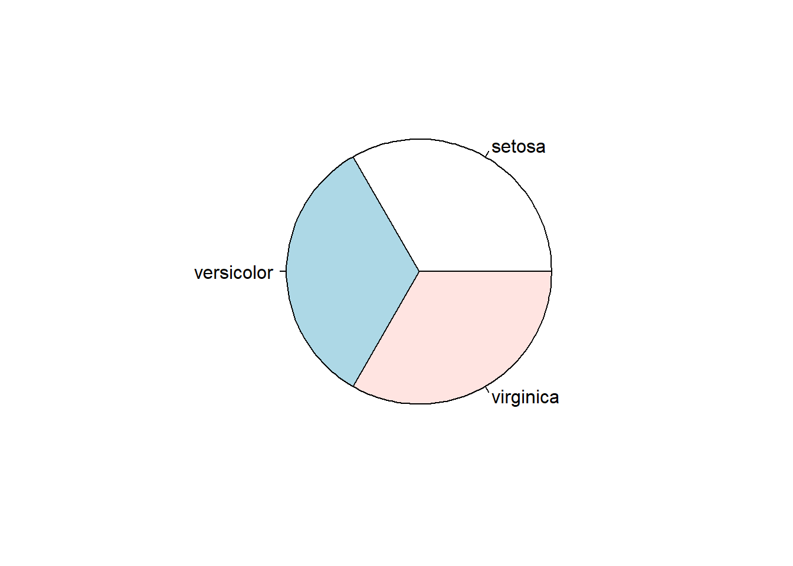
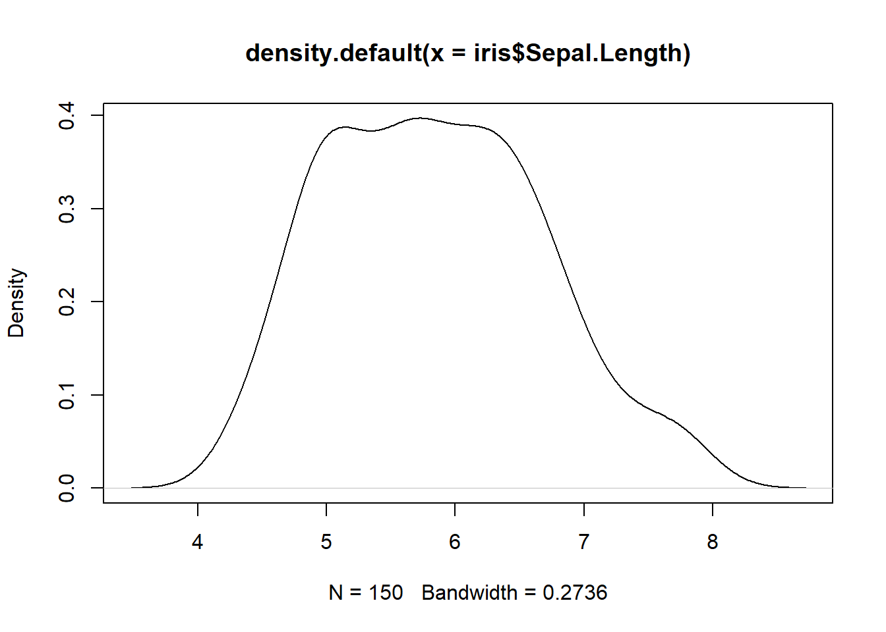
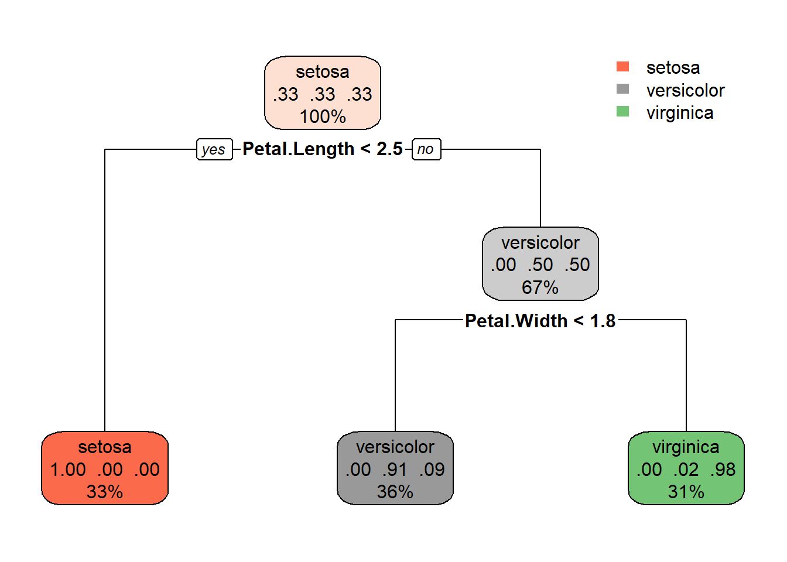

Install/load packages
if (!require("pacman")) install.packages("pacman")
pacman::p_load(Formula, partykit, party, rpart, rpartplot)## package 'party' successfully unpacked and MD5 sums checked
##
## The downloaded binary packages are in
## C:\Users\tedky\AppData\Local\Temp\RtmpsJS6AP\downloaded_packagesLoad data
data(iris)Examine Data
dim(iris)## [1] 150 5head(iris)## Sepal.Length Sepal.Width Petal.Length Petal.Width Species
## 1 5.1 3.5 1.4 0.2 setosa
## 2 4.9 3.0 1.4 0.2 setosa
## 3 4.7 3.2 1.3 0.2 setosa
## 4 4.6 3.1 1.5 0.2 setosa
## 5 5.0 3.6 1.4 0.2 setosa
## 6 5.4 3.9 1.7 0.4 setosanames(iris)## [1] "Sepal.Length" "Sepal.Width" "Petal.Length" "Petal.Width" "Species"str(iris)## 'data.frame': 150 obs. of 5 variables:
## $ Sepal.Length: num 5.1 4.9 4.7 4.6 5 5.4 4.6 5 4.4 4.9 ...
## $ Sepal.Width : num 3.5 3 3.2 3.1 3.6 3.9 3.4 3.4 2.9 3.1 ...
## $ Petal.Length: num 1.4 1.4 1.3 1.5 1.4 1.7 1.4 1.5 1.4 1.5 ...
## $ Petal.Width : num 0.2 0.2 0.2 0.2 0.2 0.4 0.3 0.2 0.2 0.1 ...
## $ Species : Factor w/ 3 levels "setosa","versicolor",..: 1 1 1 1 1 1 1 1 1 1 ...head(iris)## Sepal.Length Sepal.Width Petal.Length Petal.Width Species
## 1 5.1 3.5 1.4 0.2 setosa
## 2 4.9 3.0 1.4 0.2 setosa
## 3 4.7 3.2 1.3 0.2 setosa
## 4 4.6 3.1 1.5 0.2 setosa
## 5 5.0 3.6 1.4 0.2 setosa
## 6 5.4 3.9 1.7 0.4 setosasummary(iris)## Sepal.Length Sepal.Width Petal.Length Petal.Width
## Min. :4.300 Min. :2.000 Min. :1.000 Min. :0.100
## 1st Qu.:5.100 1st Qu.:2.800 1st Qu.:1.600 1st Qu.:0.300
## Median :5.800 Median :3.000 Median :4.350 Median :1.300
## Mean :5.843 Mean :3.057 Mean :3.758 Mean :1.199
## 3rd Qu.:6.400 3rd Qu.:3.300 3rd Qu.:5.100 3rd Qu.:1.800
## Max. :7.900 Max. :4.400 Max. :6.900 Max. :2.500
## Species
## setosa :50
## versicolor:50
## virginica :50
##
##
## Plot Data
pie(table(iris$Species))
var(iris$Sepal.Length)## [1] 0.6856935cov(iris$Sepal.Length, iris$Petal.Length)## [1] 1.274315cor(iris$Sepal.Length, iris$Petal.Length)## [1] 0.8717538hist(iris$Sepal.Length)
plot(density(iris$Sepal.Length))
plot(iris)
iris_ctree <- rpart(Species ~ Sepal.Length + Sepal.Width + Petal.Length + Petal.Width, data=iris)
print(iris_ctree)## n= 150
##
## node), split, n, loss, yval, (yprob)
## * denotes terminal node
##
## 1) root 150 100 setosa (0.33333333 0.33333333 0.33333333)
## 2) Petal.Length< 2.45 50 0 setosa (1.00000000 0.00000000 0.00000000) *
## 3) Petal.Length>=2.45 100 50 versicolor (0.00000000 0.50000000 0.50000000)
## 6) Petal.Width< 1.75 54 5 versicolor (0.00000000 0.90740741 0.09259259) *
## 7) Petal.Width>=1.75 46 1 virginica (0.00000000 0.02173913 0.97826087) *rpart.plot::rpart.plot(iris_ctree)